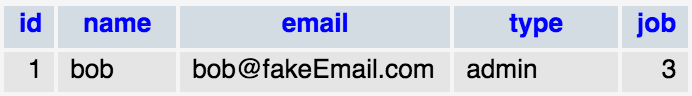
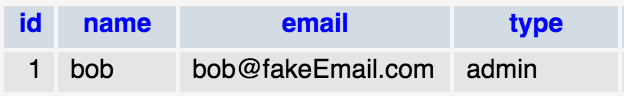

What is AmBlend?
TL;DR It makes grabbing objects from and saving objects to a database super easy.
In short, AmBlend is the ORM tool developed for, and included with Cora. An ORM (Object Relational Mapping) tool is something that handles moving data to and from objects and the database. This is useful when doing OO (object oriented) programming as it allows developers to focus on the core functionality and features of their application and not on the nitty-gritty grunt work of how to fetch and persist (aka 'save') data. This generally results in less code that needs to be written, and faster development times.
As an added bonus, using AmBlend allows Cora to build your database for you automatically based on the definitions of your models, if you so desire.
How Does AmBlend Differ From Other ORMs?
ORM implementations basically boil down into two basic types: Active-Record or Data-Mapper. Both have their pros and cons, but AmBlend was designed as a "blend" of both approaches ('AM' short for Active-record and data-Mapper) with the goal of taking the best aspects of each and blending them into a new paradigm. Below are the stereotypical strengths and weaknesses of each approach compared to AmBlend:
| Property: | Active-Record | Data-Mapper | AmBlend |
|---|---|---|---|
| Easy to Setup | Yes | No | Yes |
| Easy to Use | Yes | No | Yes |
| Easy to Test | No | Yes | Yes |
| SRP Compliant | No | Yes | Yes |
| Domain and Database Separation | No | Yes | Yes |
| Performance Optimization | Depends | Depends | Yes* |
* As much as possible, flexibility and optimization were kept in mind when building AmBlend. An explanation of the specific optimizations in place can be found in the optimizations section.
For more information about how AmBlend is implemented, see AmBlend's "Implementation" page.
How-to-Use Basics
First you need to have your models extend from Cora's Model class, and add an associative array which defines the attributes of that model. See below for an example User model which has an ID, a couple strings in Name and Email, and a Job attribute which is another model representing the job of this user.
Define some Cora models:
class User extends \Cora\Model {
public $model_attributes = [
'id' => [
'type' => 'int',
'primaryKey' => true
],
'name' => [
'type' => 'varchar'
],
'email' => [
'type' => 'varchar'
],
'job' => [
'model' => 'job'
]
];
public function __construct($name = null, $email = null)
{
$this->name = $name;
$this->email = $email;
}
}
class Job extends \Cora\Model {
public $model_attributes = [
'id' => [
'type' => 'int',
'primaryKey' => true
],
'title' => [
'type' => 'varchar'
],
'description' => [
'type' => 'varchar'
]
];
public function __construct($title = null, $description = null)
{
$this->title = $title;
$this->description = $description;
}
}
Notice you didn't have to use any special comments with @ symbols or anything else; you inform Cora about what your model's attributes are using a normal array. Furthermore, there's nothing special about the constructors (you can write them just like you would any other class), AND there's nothing special about the properties of a model either. If you want to add additional normal properties to the model that's all perfectly fine. All that's important to know is that unless a property is defined in the "model_attributes" array, AmBlend won't try to save it to a database. To say that another way, you can add whatever properties you want to a model, AmBlend will just ignore them unless you also add that property to the model_attributes array. In that sense, you can use and create Cora models just like you would any normal class. The only thing you need to be careful of is to not override the _ get() and _ set() methods.
Next you need to create your database(s).
Create Your Database:
The easiest way to create your database is to use AmBlend's automated database creation tool! In order to take advantage of this feature, you need to make sure you've setup your database configuration. If you haven't done that yet, Click Here to view instructions on doing so. The other thing you'll need (as of me writing this), is command line access. In the future, an in-browser visual interface to the database creation tool may be added, but for now it's just a command line tool.
To automatically generate a database based on your model definitions you need to do the following:
- Open a Terminal.
- If on a Mac, open your Applications, click the Utilities folder, and then select the "Terminal" application.
- If on a PC, hit your Windows Key + R to open the "Run" window, then type in "cmd" and hit enter.
- If on Linux you don't need me to tell you how to do this, but since I can't help myself I'll mention that Ubuntu and Mint both map the terminal to Ctrl+Alt+T.
- Navigate to your project's directory.
- If you are XAMPP, MAMP, etc, that will likely be wherever you installed that and then in the "htdocs" folder within.
- Once at the root of your project, type "php Amblend.php dbBuild" to have
AmBlend build your database for you.
- If you get an error about PHP not being a recognized command, that means PHP is not a part of your operating system's PATH. Google "add php to path" or something similar if you aren't sure how to do this.
If all went well, you should see a flurry of output to the console and your database should be ready to go!
Of course, if you want to read through the documentation in the Models page to fully understand how the mappings work for the purpose of setting your database(s) up manually, you can, although that takes more expertise and effort.
Start Using AmBlend:
And ... wait for it ... congratulations! You're now ready to start using AmBlend. So we're all good to go, but how do we actually fetch models from and save models to the database? The answer is we need to use a Repository. See below for an example Users controller where we use AmBlend to interact with our database. This Users controller will be very simple, we'll just have a method for registering a new user, and an ultra simple Profile method that just echoes out the user's job title.
Using AmBlend in a Controller:
class Users extends \MyApp
{
protected $repo;
protected $db;
public function __construct()
{
parent::__construct();
$this->repo = \Cora\RepositoryFactory::make('User');
}
/**
* Create a new user.
*/
public function register()
{
// Grab our inputs. We'll just use fake data instead of
// actually capturing it from a form.
$name = 'Bob'; // $this->input->post('name');
$email = 'Bob@fakeEmail.com'; // $this->input->post('email');
// Create a new User.
$user = new User($name, $email);
// Assign the user a job.
$user->job = new Job('Athlete', 'Track and Field');
// Save the user to the database.
$this->repo->save($user);
// When the user was saved to the database, AmBlend
// assigned the object the unique ID the database provided it.
// Let's echo this user's ID.
echo $user->id;
}
/**
* Display a user's profile.
* In this case, just echo their job title.
*/
public function profile($id)
{
$user = $this->repo->find($id);
echo $user->job->title;
}
}
If you have the Cora demo project installed, you can run this code and see it working in action. First you'll want to go to:
http://localhost/{myProjectName}/users/register
^ Replace "{myProjectName}" with the name of the folder your Cora demo project is in. This should create our user "Bob" and then echo out to the browser the ID number assigned to him. If you use that ID, you can then go to the profile page at:
http://localhost/{myProjectName}/users/profile/{id}
^ Where {id} is the ID of Bob. If Bob's ID is "2":
http://localhost/{myProjectName}/users/profile/2
And just like that, AmBlend saved our user Bob to the database as represented by the User object, saved a separate Job object to the database that represents the job Bob does, and automatically handled setting up the associations for you between the objects. This is why you can do:
echo $user->job->title;
on the profile page and have it work so effortlessly. Behind-the-scenes AmBlend is doing all the heavy-lifting busy work for you to make saving and retrieving objects along with any other objects associated with them a breeze.
Explanation Pitstop:
So the one thing I didn't talk about in the code above is what's happening
in the constructor for our Users controller where we are creating our Repository object.
In programming lingo a "factory" is a class that handles creating objects for you. The easiest way to get a Repository of a certain type is to use Cora's RepositoryFactory class' Make method and telling it what type of repository you want to create. So the code as seen below is just the simplest way of creating a User class repository:
$this->repo = \Cora\RepositoryFactory::make('User');
For more information about the Repository, Gateway, Factory pattern I recommend reading the documentation page for each under the AmBlend ORM section.
Optimizing Performance
Ok, now that's we've seen the bare basics of how AmBlend works, let's talk for a minute about how it tries to make your app lean and fast. In general, ORMs get a bad rap for being inefficient, and rightfully so. I've read the horror stories of engineers called in to speed up programs only to find out the ORM used by the program is spitting out super ugly and inefficient queries that are like trying to kill a fly with a heavy machine gun! In terms of AmBlend, my goal here is to describe exactly how it works so you can make your own judgements about when or when not to use it.
"Light" Classes:
First up, when grabbing data from a row in the database for the purpose of populating an object, by default, AmBlend will grab all the data in that row. That is to say:
$user = $this->repo->find($id);
Is the SQL equivalent to doing:
SELECT * FROM users WHERE id = :id
One of the optimizations in AmBlend is the ability to dynamically create "light" versions of a class by not grabbing all the class data, and instead only grabbing the data you need. This is possible because AmBlend uses Cora's Database class to interact with the persistence layer, and allows you to pass a partial query along to the repository when asking for models. See below for example. You can add the following method to the Users controller we previously used to see this in action:
public function lightClassDemo($id)
{
$this->db->where('id', $id);
$this->db->select(['id', 'name']);
$user = $this->repo->findOne($this->db);
var_dump($user);
}
Is equivalent to doing:
SELECT id, name FROM users WHERE id = :id
What we're leaving out here is the user's email and their job, maybe because whatever we're doing with the object doesn't require that info. It's a general rule when optimizing performance to only grab what you need, and with this functionality, AmBlend gives you that capability.
(Note that you can use findAll() to similarly fetch a collection of "light" objects.)
Collection Subsets:
Alright, say you want to print out a list of users, but you don't want to list all users, just the ones that are Admins. Using the same methodology we used in the previous section to create a "light" version of a class, we can also limit the objects we are grabbing to a subset of a whole collection. (Note: this example assumes there's some sort of "type" attribute on the user model):
public function subsetDemo()
{
$this->db->where('type', 'Admin');
$users = $this->repo->findAll($this->db);
foreach ($users as $user) {
echo $user->name.'<br>';
}
}
This is yet another example of how AmBlend let's you only fetch the data you need, so you aren't wasting system resources.
Dynamic Loading
Alright, now that we've talked about how data on the class' main table can be limited ("light" classes) and how repositories can be asked to return only a subset of objects in a collection... let's continue our discussion of performance by going over HOW AmBlend grabs related objects.
By "related objects" what I'm referring to is say the Job object associated with a user from one of our previous examples on this page. Another example would be if you were creating a blogging site and each user had a collection of "articles" they've written where each article is its own object. If you are an experienced developer who's concerned about performance, how AmBlend grabs these related objects from a database is something you should know.
The answer to that question is that AmBlend only grabs related objects "on-demand" utilizing what I call Dynamic Loading. The way in which this is done varies a little bit depending on how the data is stored, but all follows the same concept. Going back to the "User has a Job" example, the way we defined the Job attribute on our User model as a simple, single related object means that our Users table will have a "job" column that stores the ID of that user's job.

In the case of Bob as seen in the image of his Users table entry above, grabbing his whole user object and doing a var_dump as seen in this code:
public function profile($id)
{
$user = $this->repo->find($id);
var_dump($user);
}
Has the following applicable output:
protected 'model_data' =>
array (size=5)
'name' => string 'bob' (length=3)
'type' => string 'admin' (length=5)
'id' => string '1' (length=1)
'email' => string 'bob@fakeEmail.com' (length=17)
'job' => string '3' (length=1)
As you can see, the "job" attribute is NOT an object at this point, it's just an ID number that references a job object. However, through the power of AmBlend's dynamic loading, if you try and access Bob's job property, it will be fetched from the persistence layer and an object will replace the ID. To see this in action, let's echo out Bob's job title, and then do a var_dump afterwards to see the difference:
public function profile($id)
{
$user = $this->repo->find($id);
echo $user->job->title;
var_dump($user);
}
And the result of the var_dump now looks like:
protected 'model_data' =>
array (size=5)
'name' => string 'bob' (length=3)
'type' => string 'admin' (length=5)
'id' => string '1' (length=1)
'email' => string 'bob@fakeEmail.com' (length=17)
'job' =>
object(Job)[11]
public 'model_attributes' =>
array (size=3)
...
protected 'model_data' =>
array (size=3)
...
As you can see, the "job" attribute is no longer just an ID, it's been replaced by a full Job object!
For object collections or single objects that use a relation table:
This works similarly, but slightly different for related objects that use a relation table or an "owner" type column on the related object's table. If Bob's User table entry looked like this:

(Notice the lack of a "job" column)
And Jobs were getting related to Users by utilizing a separate relation table, then the var_dump on User would look like this:
protected 'model_data' =>
array (size=5)
'name' => string 'bob' (length=3)
'type' => string 'admin' (length=5)
'id' => string '1' (length=1)
'email' => string 'bob@fakeEmail.com' (length=17)
'job' => int 1
In this scenario, the "job" attribute is NOT the ID of the related job object, but rather just a boolean placeholder to let AmBlend's Dynamic Loading system know that a related job exists, and that if Job is called for, it needs to use the reference table to go fetch it!
This is obviously a slight difference, but one that could trip you up if you don't realize how it's working.
Performance considerations of dynamic loading:
Alright, now that you should have an understanding of how AmBlend grabs related objects ("on-demand" using dynamic loading), you can weigh the performance cost. On one hand, the fact that AmBlend grabs only as little data as possible and grabs extra stuff as needed helps keep your objects lean. However, because a separate query is run each time you need to fetch a related object, this has the potential to bombard your database with hundreds or even thousands of small queries for individual objects. For example, let's pretend we have 1,000 users in our users table and we execute the following code on a Users repository:
// Fetches ALL users
$users = $this->repo->findAll();
foreach ($users as $user) {
echo $user->job->title;
}
The loop will run 1,000 times, and since each Job will be fetched individually using a separate query at the time it tries to get accessed, it will result in the equivalent of 1,000 of these queries:
SELECT * FROM jobs WHERE `id` = :id
I'm not a database mega-expert, but I'm sure that doing 1,000 small queries is less efficient than if you just did one larger query to grab all the data you needed in one go. Maybe if you consider the fact that you'd then have to loop through the results of the larger query to assign each row of data to an object it might come out as a wash, but that's for you to decide and not me. The point I want to communicate is that this is how it works when you try and access related objects to whatever the primary object you're using is.
If you wanted to grab all the Jobs from the database and have AmBlend return them for you as objects, but you DON'T want to go through that process of executing 1,000 individual queries... you have a few options:
Avoiding Lots of Mini-Queries - Option #0:
(Yes, I did just call this option zero. On purpose.)
The fact of the matter is, looping through 1,000 users and accessing information about each, is not a typical usage example. If you're building an object oriented reporting system, I could see this being the case, but in 95% of situations you're probably iterating over a small collection. If you are making some sort of users list, chances are you'll be using a pagination setup, and so you probably only need to loop over a few dozen users at a time.
If you're building say a Forum post system, again you're probably only iterating over a few dozen users, and using a pagination system again if things get too long.
In my experience exploring things such as string matching algorithms, when dealing with small data sets, a simple brute-force solution usually performs as well or better than a fancy more eloquent one due to the overhead cost of setting up fancy solutions.
So if you're concerned about performance, do a little testing. You might find the simplest option may be the best option.
Avoiding Lots of Mini-Queries - Option #1:
You can just create a Jobs repository and ask for all the jobs. This will execute a single query to fetch a collection of all the Jobs. The downside here is that unless you create a backwords reference from a Job to a User (our example from earlier on this page didn't have one), you won't know what User(s) that Job is associated with. Also worth noting, if you end up adding a backreference and using it, you might end up in the same individual queries situation.
But depending on what you're doing, just grabbing all the jobs this way and then maybe doing some mapping between the collection of Jobs and the collection of Users (if necessary for the task) could be an option.
Avoiding Lots of Mini-Queries - Option #2:
If you don't need the full related object, but just a piece of information from it, you can add a join to the Repository query. For instance, let's say you don't need the full Job object, but just need a user's job title. You can do the following:
public function joinDemo($id)
{
$this->db->where('users.id', $id)
->select(['users.id', 'users.name', 'jobs.title as job_title'])
->join('ref_users_jobs', [['users.id', '=', 'ref_users_jobs.user']])
->join('jobs', [['ref_users_jobs.job', '=', 'jobs.id']]);
$user = $this->repo->findOne($this->db);
echo $user->job_title;
}
(NOTE: the above example is taken directly from the Cora demo project and Jobs are related to Users via a relation table - which is different from our previous example on this page where a Job ID was stored directly in the Users table)
Looking at the select() method above, in addition to grabbing the user's ID and name, we are also doing some joins and then grabbing the user's job title. Since "job_title" is NOT defined in the User class attributes definition, AmBlend will pass it into the object as a property, but it will not do anything further. What this means is that if you alter the title and then tell AmBlend to save this user, the job title will NOT get saved since it's not technically part of the class definition. The job title is just merely extra data you asked AmBlend to grab, which it did.
This can be useful if you just need some simple read-only data about a user though! As you can see in the code snippet above we were able to echo out the title. I'm sure if you're an experienced developer and reading this you can see how this could be useful as long as you're careful about when/how you use it. It's just important to keep in mind that any object properties not defined in the model_attributes array are ignored when an object is saved.
It's also worth noting here that a (probably more convenient) way of doing the same thing is to utilize a model's lifecycle hooks to run some custom queries when a model is fetched or saved! By doing so you can fetch the extra data anytime you would normally fetch an instance of the model, and you can save the extra data whenever you tell a repository to save it. See the LifeCycle Hooks section for more information.
Avoiding Lots of Mini-Queries - Option #3:
You can pass a custom built Gateway to a Repository that does whatever queries you want and manipulates data in whatever way you want. AmBlend is great because it handles the generic day-to-day fetching and persisting of objects for you, which is really nice, BUT that doesn't mean you can't override its default behavior if you need to handle more complicated tasks. See the section below on how you can modify or replace the default Gateway (the class in charge of fetching data from the persistence layer) with a custom one of your own making.
Limiting Resource Creation
Another optimization made in AmBlend is statically declared data when possible. Specifically, since most apps are likely created using a single database, the default database adaptor is stored statically. What this means is that each time you trigger something like Dynamic Loading on an object that uses the app's default database, AmBlend isn't creating a new database object each time, but rather using the statically stored version if it exists. This means less work to get setup.
It's a small thing, but every little improvement helps in the long run.
Overriding Default Behavior
So one of the criticisms of the ActiveRecord pattern is it ties an object too closely to a single table, and doesn't give the flexibility in how an object is fetched and saved that a developer might want. In most cases, this really isn't a problem (ActiveRecord is the most popular ORM pattern in use as of this writing to my knowledge after all). In addition, as you've probably noticed if you've read this far down the page, grabbing related objects from various different tables is an absolute BREEZE using AmBlend! However, there still may be situations that come up where a developer feels the need for advanced models that are composed of direct data from multiple tables ("direct data" meaning numbers, strings, dates, etc).
The first thing I would caution a developer if they feel like they need to do this is to sleep on it, and re-examine what they're trying to accomplish. Does your object REALLY need its data grabbed from multiple tables/sources? Can the data you want to grab from a 2nd table be grabbed from a related object, rather than shoving it into your current one? What about just doing a good old fashioned direct query using Cora's database class? There are lifecycle hooks you can use when fetching or saving a model to run your custom query for fetching/saving this extra data. The point I'm trying to make is that the option I'm going to share below, you probably don't ever need to use... but I'll share it anyway because knowledge is power... or something like that.
Writing Your Own Gateway:
Alright, I'm not actually going to go into too much depth on this, as if you're a developer who feels the need to write your own Gateway for fetching/persisting an object, you probably are pretty competent in your knowledge and skills. Instead I'll just gloss over the high-level process of doing this in Cora to save you time having to dig as much into the code.
The steps I would take are as follows:
- Either extend Cora's Gateway class and override whatever method(s) you want, or copy+paste the existing class into a new file, delete the contents of the methods, and save it as whatever you want (something like "UserGateway" would make sense for a User class). Obviously don't forget to implement the methods with your own code.
- Now that you have your fancy custom Gateway ready to go, you just need to pass it into a Repository in place of the default one included in Cora. The way to go about doing this is to NOT use the RepositoryFactory like we've been using in our examples, and instead just go through the simple process of initializing a Repository for yourself like so:
// Create the Factory and Gateway the repository will use.
$factory = new Factory($class);
$gateway = new UserGateway(...insert your parameters...);
// Pass a gateway and factory to the repository.
$repo = new Repository($gateway, $factory);
As you can see, the process of replacing the gateway for an object repository is trivial. The hard part is actually implementing the custom Gateway. Anyways, that's the gist of it... happy coding!
Testing
Alright, the first important thing to realize about AmBlend when considering testing is the Data-Mapper pattern it follows. Because the logic to persist a model is separate from the model itself, you can do any of the following as suits your needs for testing:
- You can use a test Gateway to return fixed dummy data (see the "writing your own gateway" description above for more info). If you plan on leaving Dynamic Loading on, you'll also need to pass in to the Factory a database object you want used for testing (Dynamic Loading will use that DAO).
- You can pass in a database object to a Test database connection in order to grab your testing data. This would look like so, where you need to pass the database object to both the Factory and Gateway:
$db = \Cora\Database::getDb('name_of_test_db_connection');
$class = 'User';
$factory = new Factory($class, $db);
$gateway = new Gateway($db);
$repo = new Repository($gateway, $factory);
- And last but not least, you can just create classes of whatever model you need by hand (not using the Repository/Gateway/Factory) and populate them with whatever you want. This works because Cora models are just normal everyday classes that you can use just like any other class. The one thing you'll want to be sure to do in this situation though is to turn off Dynamic Loading (see below).
Turning off Dynamic Loading:
Let's quickly talk about Dynamic Loading and how to turn it off. You'll recall from previous discussions that Dynamic Loading is a nifty little feature that allows a model to request additional related objects from a Repository on-demand. If you are expecting this behavior, and want the model to be able to request related models on-demand, you don't need to do anything and can just leave this feature on. However, if you want full control over the model, and would like to turn Dynamic Loading off, you just need to flip the following boolean on the model:
$user = $this->repo->find($id);
$user->model_dynamicOff = true;